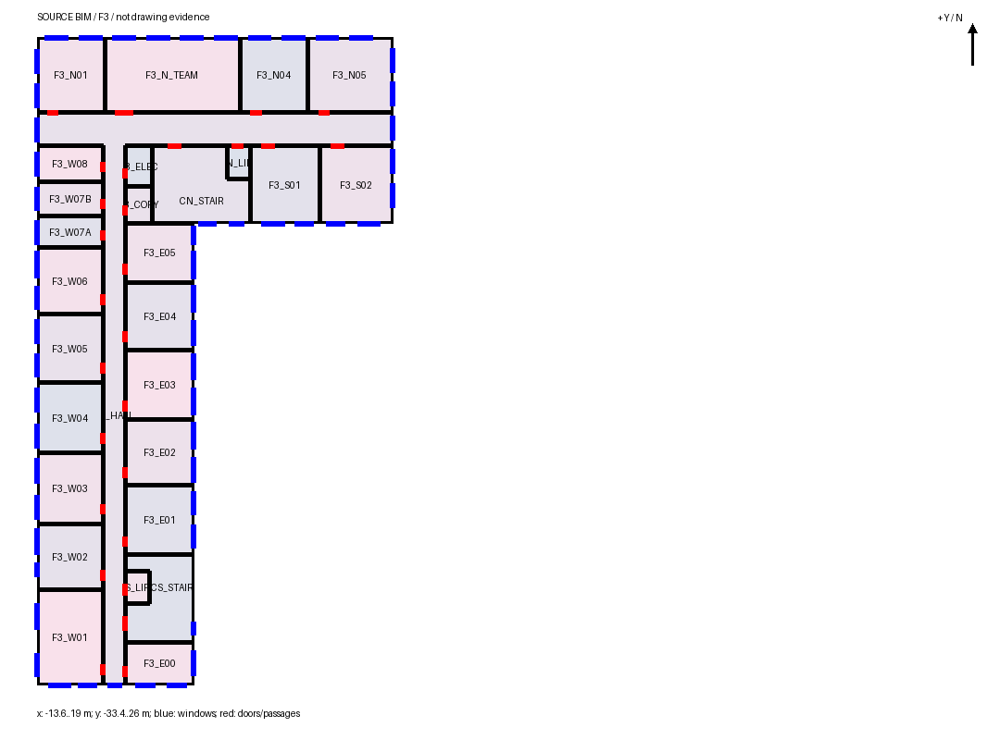

6.1 Sol · candidate_04
建筑方案合理；精细档部分达到
193 空间 · 421 窗组 · 216 门 · 57.9 分钟
打开三维模型 ↗
独立复核记录
- 门普遍偏置，连续交通核有逐层归属，附楼分成两层；屋顶机房与阁楼分别推断。
- 66 个封闭办公室中没有单窗房，49 个对应两窗；标准层粒度仍低于本次精细偏好。
- 193 个空间均在声明开口连通图中可达；另有 2 处敞口。几何与连通检查不证明真实室内或规范合格。

实际保存源的标准层平面；点击放大。数量用于说明规模，不代表质量排名。